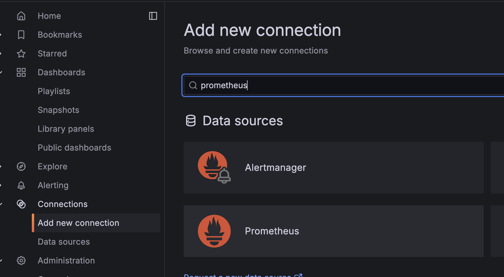
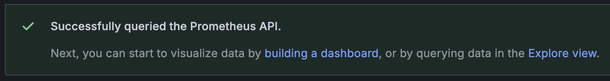
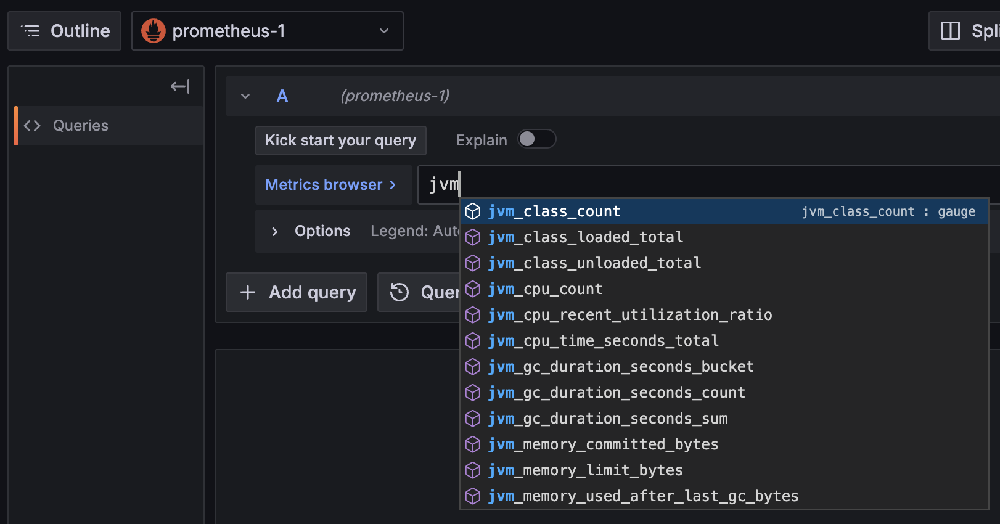
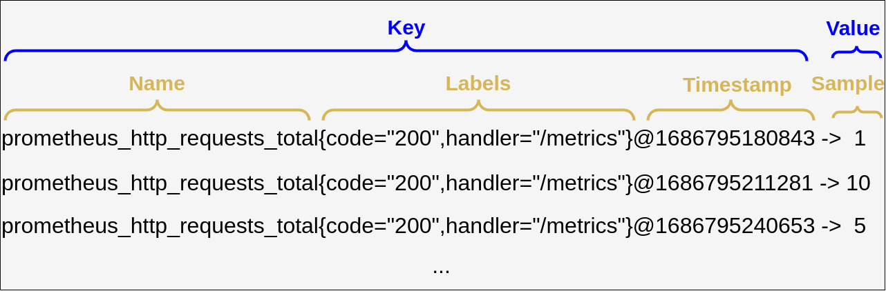
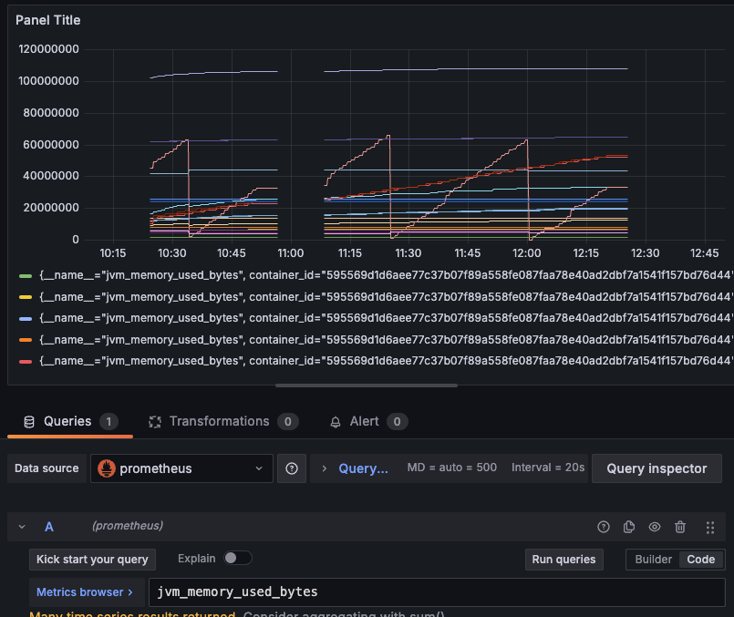
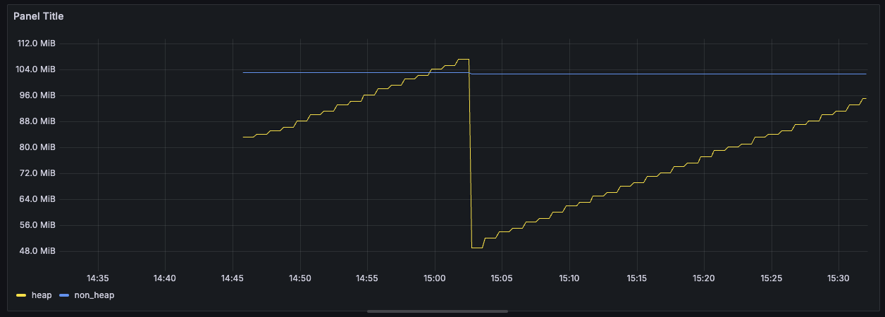
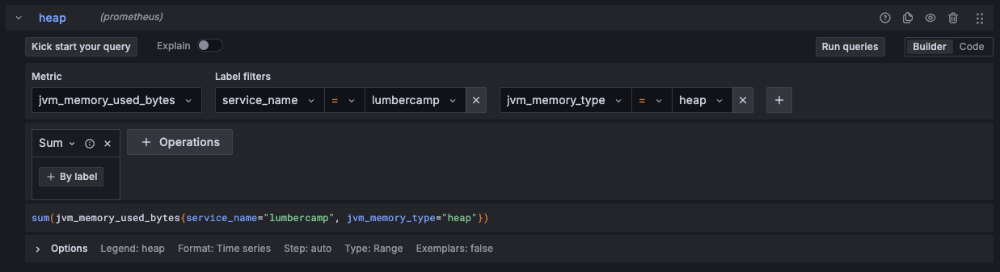
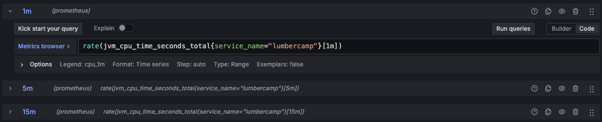

Metrics Dashboard
Estimated time to read: 6 minutes
Configuration
Prometheus
Nous allons ajouter une DataSource Prometheus pour afficher les métriques issues d'applications Java.

| Information | Value |
|---|---|
| Name | prometheus |
| URL | http://prometheus:9090 |
| Authentication methods | No Authentication |
| Skip TLS certificate validation | true |
üòá Comme tout est en local, nous n'avons pas d'authentification √† ajouter. Ni de gestion des TLS.
Vous pouvez d'ailleurs vous connecter à cette instance qui tourne en local ici
Success

La fonction explore
Avant de créer notre dashboard, on peut facilement explorer les données disponibles via cette DataSource en cliquant sur le bouton Explore data en haut à droite qui redirige vers le menu Explore. On retrouve le même type de formulaire que pour les requêtes d'un widget.
On peut facilement voir les métriques disponibles via le metrics browser

Mais aussi grâce à l'auto-complétion:

Une visualisation par défaut est proposée pour afficher les données:

Et les données brutes:

Quelques mots sur PromQL
Prometheus utilise le langage PromQL pour Prometheus Query Language ...
Une requête PromQL retourne une liste d'enregistrements, ils sont composés des éléments suivants :
- Name: le nom de la métrique
- Labels: les labels associés à la métrique
- Sample: la valeur de la métrique
- Timestamp: le timestamp
 Ce schema est extrait de l'article introduction to prometheus promql
La clé d'un enregistrement est la combinaison du nom de la métrique, des labels associés et du temps.
http_requests_total{app="myApp",instance="blue"}@1600000000 -> 5
http_requests_total{app="myApp",instance="green"}@1600000000 -> 10
Dans l'exemple ci-dessus, on a deux enregistrements pour la même métrique http_requests_total mais avec des labels différents.
On peut donc avoir plusieurs valeurs pour la même métrique :
- Le Quoi : Ici http_requests_total qui exprime une unité : on observer un nombre de requete total.
- Le Qui : Toutes les deux concernent l'aplication
myAppmais sur deux instances différentes (uneblueet unegreen). - Le Quand : La valeur est associée à un timestamp, ici
1600000000(en secondes depuis le 1er janvier 1970). - La Valeur : La valeur de la métrique, ici
5et10.
Les labels et le nom de la métrique sont en partie définis par la source de données. Il est aussi possible d'ajouter des règles dans Prometheus pour ajouter / modifier / supprimer des labels.
Par défaut, Prometheus va ajouter des labels pour donner des informations sur la source des données (le label job par exemple).
C'est très utile pour séparer les données de plusieurs sources (ex environnement de production / préprod ou dans l'exemple précédent blue et green).
Le dashboard
Démarrons maintenant le lab : créer un nouveau Dashboard nommé Dashboard de monitoring.
Monitoring de la mémoire
Ajouter une nouvelle visualisation pour afficher les métriques de mémoire de notre application Java en choisissant la DataSource prometheus précédemment créée.
On va utiliser la métrique suivante : jvm_memory_used_bytes pour configurer la Query.
En spécifiant uniquement le nom de la métrique, on remonte l'ensemble des valeurs associées à cette métrique.
Les métriques sont bien affichées

Prometheus utilise des Labels pour donner plus d'informations sur une métrique

Configuration du widget

Pour le moment, notre widget n'est pas particulièrement lisible (Toutes les informations mémoire de nos JVM sont retournées sur le même graphe). On va ajouter des informations pour le rendre plus lisible.
On souhaite afficher les mémoires Heap / Non Heap pour le service lumbercamp pour suivre l'évolution de la mémoire.
En observant les labels pour identifier ceux qui sont les plus intéressants et modifier le widget en conséquence:
- Filtrer pour n'afficher que les infos en lien avec le service lumbercamp.
- Modifier les unités du graphe pour que les valeurs soient en
bytes - Afficher uniquement 2 courbes représentant la mémoire de type heap et la mémoire de type non_heap
Le langage de requêtage PromQL permet de faire des opérations sur les données. On utilisera ici l'opérateur d'agrégation sum
Un indice
Le label jvm_memory_type permet de faire la différence entre la heap et la non_heap.
Il y a plusieurs metrics pour chaque sous catégories de mémoire. Par exemple, pour la heap, on a un label (jvm_memory_pool_name )qui permet de faire la différence entre ces sous catégories.
Indice 2
Attention jvm_memory_pool_name="Metaspace" est déjà la somme des pools : "CodeHeap 'non-nmethods'" "CodeHeap 'non-profiled nmethods'" "CodeHeap 'profiled nmethods'" "Compressed Class Space"...
Success

Spoiler la solution est là
Il faut faire 2 Query :
-
Une pour la partie heap en sommant toutes les infos en lien avec un
jvm_memory_type=heap -
Une pour la partie non_heap en filtrant uniquement sur le
jvm_memory_pool_name=Metaspacedu fait qu'il représente déjà la somme des mémoires non_heap
-
Le fait de pouvoir ajouter de multiples queries sur un même graphe permet d'afficher des données avec des modes de calcul différents.
Monitoring du CPU
On va aussi afficher la consommation CPU de notre application lumbercamp.
Pour cela, on va utiliser la métrique jvm_cpu_time_seconds_total.
Les métriques de type total
Petit problème ici, la valeur correspond à la somme des temps CPU utilisés par l'ensemble des threads de notre application depuis le démarrage.
üõü PromQL Rate √† la rescousse
On aimerait avoir la consommation par minute. Pour cela, il existe des fonctions avec PromQL notamment rate qui permet de calculer la dérivée d'une série temporelle.
Cette fonction travaille avec un range-vector. Le range-vector est un vecteur de valeurs sur une période donnée. Ainsi, pour calculer la dérivée d'une série temporelle, il faut spécifier une période.
Pourquoi rate et pas delta ou increase ?
- La fonction rate est plus adaptée pour les séries temporelles car elle prend en compte les variations de la série dans le temps.Elle calcule la dérivée aux bornes du range indiqué.
- La fonction delta ne fait que calculer la différence entre deux valeurs, sans tenir compte du temps écoulé entre elles. De plus elle ne prends pas en compte un reset de la série (par exemple si l'application redémarre, la valeur de la métrique est remise à zéro).
- La fonction increase est utilisée pour calculer l'augmentation totale d'une série temporelle sur une période donnée. Elle ne calcule pas la dérivée, mais plutôt la somme des augmentations sur cette période.
On utilisera les ranges [1m] [5m] [15m] qui vont calculer un rate par seconde en se basant sur l'ensemble des données des X dernières minutes pour chaque point de données. On reproduit ainsi l'affichage du top unix.
Astuce
Vous pouvez facilement dupliquer une Query pour ne changer que l'intervalle souhaité
Success
L'objectif est d'obtenir le graphe suivant avec 3 courbes pour les rates [1m], [5m] et [15m]

Spoiler la solution est là
Il faut faire 3 Query en changeant l'interval

Filtrage par service
Comme on l'a fait pour le dashboard Postgres, il serait pratique de pouvoir dynamiquement filtrer les informations affichées par les widgets.
Pour ce dashboard, on va donc ajouter une variable permettant de changer le nom du service pour lequel on souhaite avoir les métriques.
Objectifs:
- Créer une variable
prom_service_namebasée sur la DataSourceprometheuspermettant de récupérer les services monitorés par Prometheus - Modifier les 2 widgets pour qu'il prenne en compte cette nouvelle variable dans leurs Query et dans leur titre
Success

Spoiler la solution est là
- La configuration de la variable

- Un exemple de Query modifiée

Ok c'est pas mal mais allons plus loin :
üõ´ Prochaine √©tape : Dashboard Advanced ‚û°Ô∏è